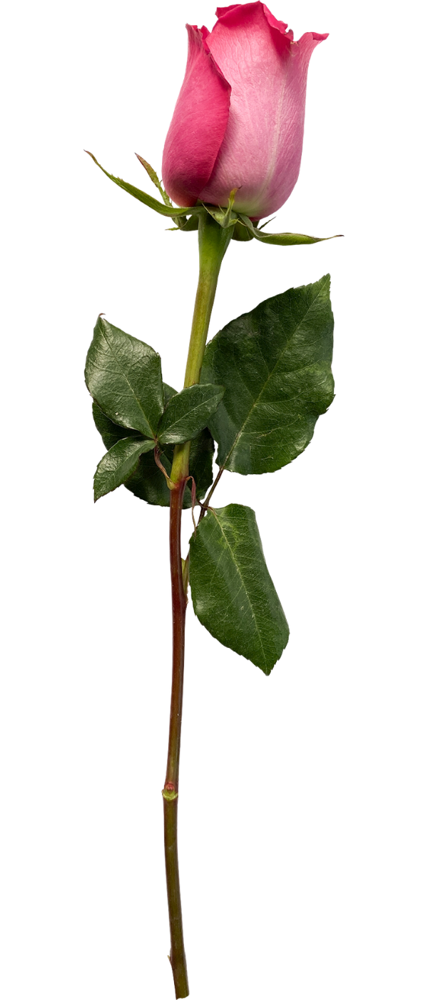

埔里 · 第三代花農
阮家獨有桃紅色系迷你玫瑰
產地直送・花藝師首選
產地直送・花藝師首選

阮家自日治時期深耕埔里花卉產業，歷經菊花、滿天星、康乃馨等各時代主流花種，至今三代從未缺席。現由兄弟阮惟鳴、阮惟朋共同經營，主力種植迷你玫瑰（小輪玫瑰），年供貨台北、台中、彰化、台南、高雄各大花市。
阮家栽培的桃紅色迷你玫瑰為母親意外發現的自然變異品種，父親嚴拒外人購枝扦插，至今仍為阮家獨有色系。現有品種包含桃紅、淺粉、白色、正紅，持續開發中。
花種 迷你玫瑰（小輪玫瑰）・薔薇科多年生
花徑 約 3 公分，一莖可開 3–10 朵
切枝分級 特級 75cm（5–6 苞）｜65 / 55 / 45 / 35 cm 共五級
觀賞壽命 勤加照顧可達 7 天以上（一般玫瑰僅 3–5 天）
適用場景 大型花禮裝飾花材・桌花・頭花・胸花・乾燥花・迷你花束
花市批發 台北、台中、彰化、台南、高雄各地花市每日穩定供貨
花店批發 接受花店定期批發，量大可議
私人詢購 婚禮用花、活動大量採購歡迎洽詢
聯繫方式 Facebook 私訊 / Instagram DM